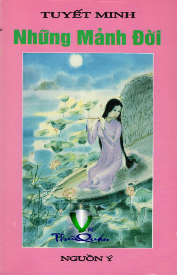

« Back
Những Mảnh Đời
By Tuyết Minh

Lời Giới Thiệu
1- Chị Cu
2- Chị Em
3- Tha Thứ
4- Trở Về
5- Lợi Dụng
6- Tâm Hồn Bao Dung
7- Nhớ Về Người Thương Phế Binh
8- Ông Hai An
9- Con Nuôi
10- Niềm Tin
11- Tinh Thần Tự Lập
12- Hay Nói
13- Mất Gố
14- Mê Tín
15- Đố Kỵ
16- Ghen
17- Nước Mắt Chảy Xuôi
18- Tâm Hồn Đẹp Xưa Và Nay
19- Tu Là Cõi Phúc
20- Lễ Giáng Sinh
21- Chuông Giáng Sinh
22- Tìm Một Hướng Đi
23 - Quan Niệm Hôn Nhân Xưa Và Nay
24- Vội Giận Mất Khôn
25- Gia Đình Đau Khổ
26- Nghĩa Vợ Chồng
27- Mấy Đời Bánh Đúc Có Xương
28- Thiên Chức Làm Mẹ
29- Góp Ý
30- Bình Quyền
31- Chân Dung Người Phụ Nữ
32- Theo Vết Lịch Sử
33- Chợ Tết
34- Tết Nguyên Đán
Lời Bạt